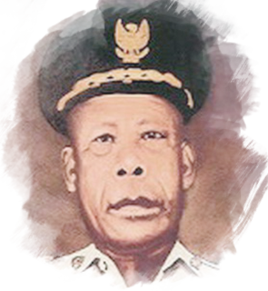

Pahlawan
"orang - orang berjasa
pemberani dan rela berkorban
bagi negara, bangsa, agama"
INDONESIA MEMILIKI BANYAK PAHLAWAN DARI BERBAGAI DAERAH DAN JUGA DARI BERBAGAI PERISTIWA YANG TIMBUL DI NEGARA INI
cari tau siapa saja pahlawan indonesia-
pulau sumatera
sultan mahmud badaruddin II
Lahir : Palembang 1767 Wafat : Ternate, 26 September 1852 Sejarah : Sultan Mahmud Badaruddin II adalah pemimpin kesultanan Palembang-Darussalam selama dua periode (1803-1813, 1818-1821) Dalam masa pemerintahannya, ia beberapa kali memimpin pertempuran melawan Inggris dan Belanda, di antaranya yang disebut Perang Menteng. Pada tangga 14 Juli 1821, ketika Belanda berhasil menguasai Palembang, Sultan Mahmud Badaruddin II dan keluarga ditangkap dan diasingkan ke Ternate.
-
pulau jawa
jendral sudirman
Lahir : Purbalingga, 24 Januari 1916 Wafat : Magelang, 29 Januari 1950 Sejarah : Jendral Soedirman adalah seorang perwira tinggi Indonesia pada masa Revolusi Nasional Indonesia. Menjadi panglima besar Tentara Nasional Indonesia pertama, ia secara luas terus dihormati di Indonesia Pada tahun 1944, ia bergabung dengan tentara Pembela Tanah Air (PETA) yang disponsori Jepang, menjabat sebagai komandan batalion di Banyumas. Selama menjabat, Soedirman bersama rekannya sesama prajurit melakukan pemberontakan, namun kemudian diasingkan ke Bogor.
-
pulau kalimantan
pangeran antasari
Lahir : Kayu Tangi, 1797 Wafat : Kalimantan, 11 Oktober 1862 Sejarah : Perang Banjar pecah saat Pangeran Antasari dengan 300 prajuritnya menyerang tambang batu bara milik Belanda di Pengaron tanggal 25 April 1859. Selanjutnya peperangan demi peperangan dikomandoi Pangeran Antasari di seluruh wilayah Kerajaan Banjar. Dengan dibantu para panglima dan pengikutnya yang setia, Pangeran Antasari menyerang pos-pos Belanda di Martapura, Hulu Sungai, Riam Kanan, Tanah Laut, Tabalong, sepanjang sungai Barito sampai ke Puruk Cahu.
-
pulau sulawesi
sultan hasanuddin
Lahir : Sulawesi Selatan, 12 Januari 1631 Wafat : Sulawesi Selatan, 12 Juni 1670 Sejarah : Sultan Hasanuddin adalah Raja Gowa ke-16 dan pahlawan nasional Indonesia yang terlahir dengan nama I Mallombasi Muhammad Bakir Daeng Mattawang Karaeng Bonto Mangape Setelah menaiki Tahta sebagai Sultan, ia mendapat tambahan gelar Sultan Hasanuddin Tumenanga Ri Balla Pangkana, hanya saja lebih dikenal dengan Sultan Hasanuddin saja. Karena keberaniannya, ia dijuluki De Haantjes van Het Osten oleh Belanda yang artinya Ayam Jantan/Jago dari Timur
-
pulau papua

frans kaisiepo
Lahir : Biak, Papua, 10 Oktober 1921 Wafat : Jayapura, Papua, 10 April 1979 Sejarah: Frans Keisiepo adalah pahlawan nasional Indonesia dari Papua. Frans terlibat dalam Konferensi Malino tahun 1946 yang membicarakan mengenai pembentukan Republik Indonesia Serikat sebagai wakil dari Papua. Ia mengusulkan nama Irian, kata dalam bahasa Biak yang berarti tempat yang panas Ia juga pernah menjabat sebagai Gubernur Papua antara tahun 1964-1973.
Jasa Pahlawan
mengapa kita harus menghargai jasa pahlawan